research task - finding spreads
Impact
LAW magazineIssue
6
Pages 58-61
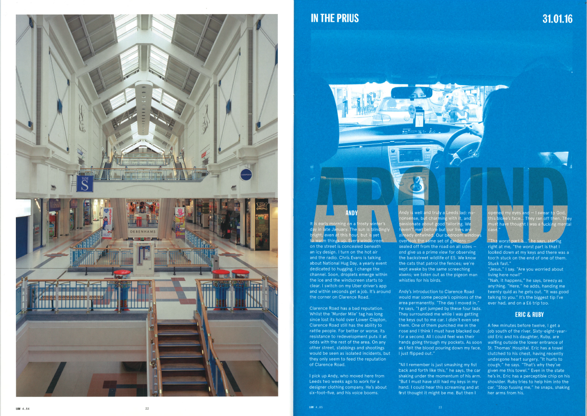
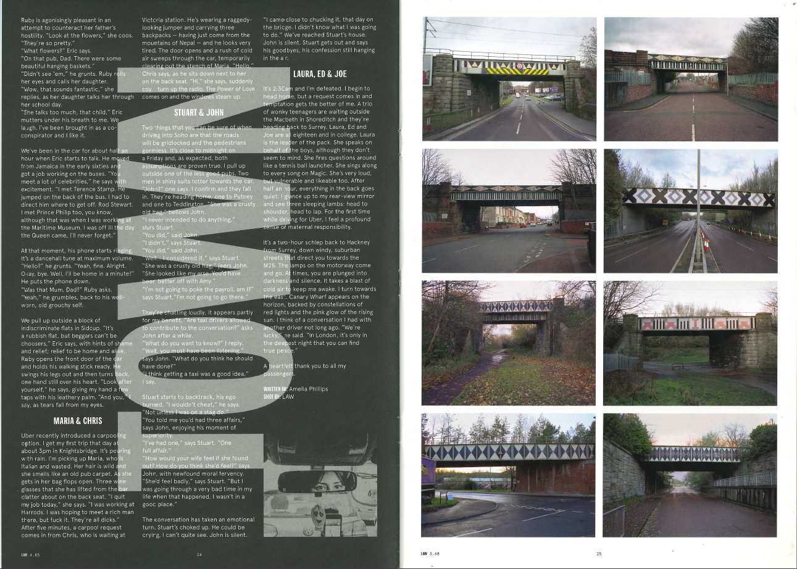
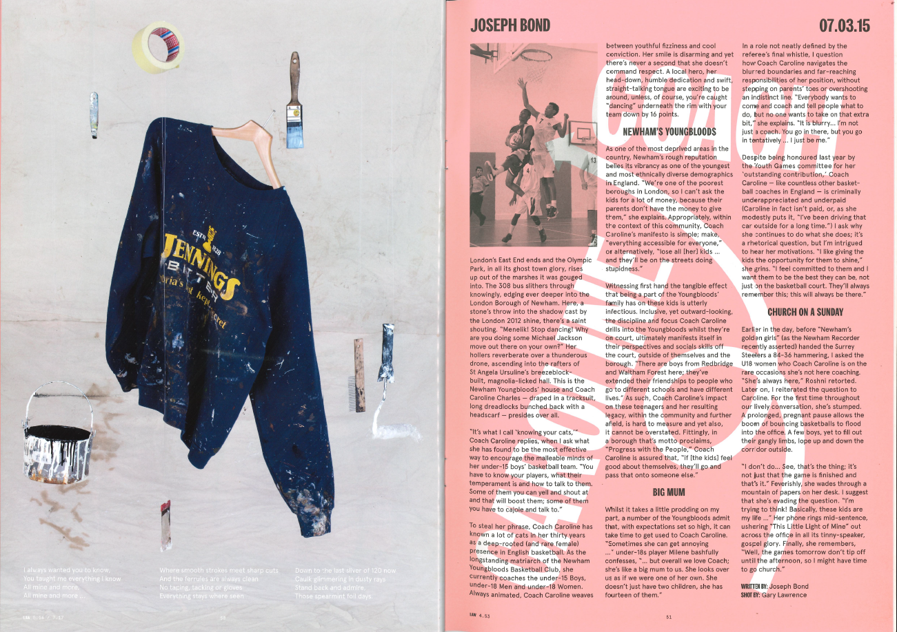
There's a really nice motif running through the magazine of bits of typography
being stuck as part of the background of an article. Sometimes it acts as a headline, sometimes
it's a word related to the article, and occasionally it's a logo or symbol relevant to the
article.
It's quite clever really, as there's a lot of potential in the directions you can
go with the idea. Each article has its own colour scheme, allowing individual personalities to
shine through, whilst at the same time keeping visual continuity through the magazine.
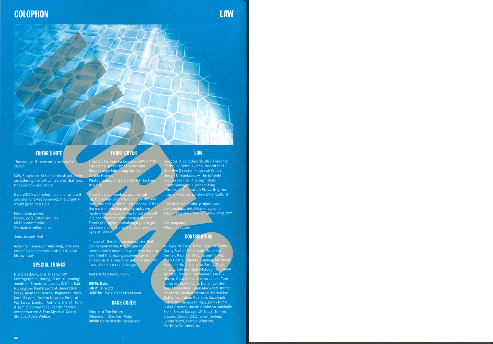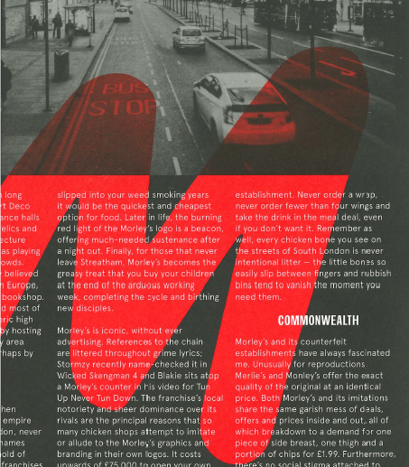
However I do think that a bit more care has to be taken that the impactful
backgrounds don't compromise legibility, something which the above article is in danger of
straying into.
Columns
COS magazineSpring /
Summer 2017
issue
Pages 58-61
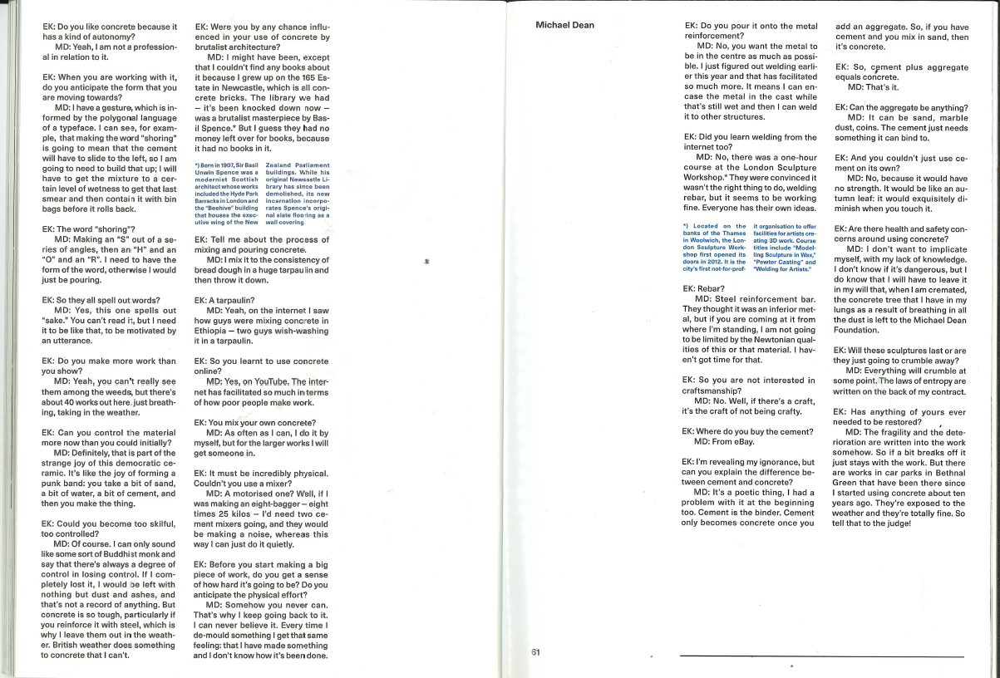
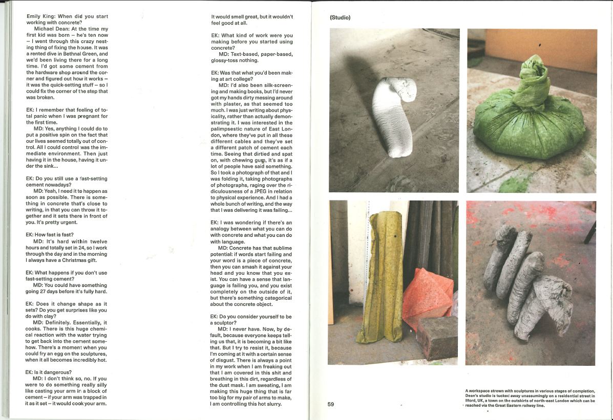
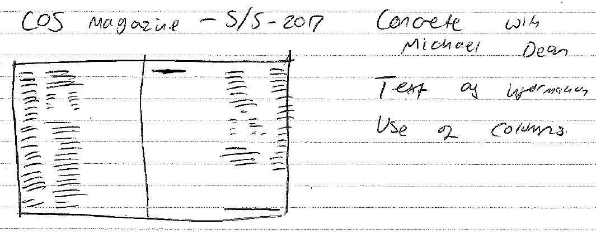
Some really unconventional column layouts here. They've taken quite a dry bit of
context and given it just enough visual interest that it's nice to look at whilst still being
minimalist.
I especially like the footnote sections, which are incorporated directly into the
paragraph flow but are placed into two inset columns, which I think is a great idea and it looks
excellent.
The stark monochrome design helps to cement the article's place within the setting
of a designer fashion publication.
Colour
WiredWired Live
issue
Pages 53-61
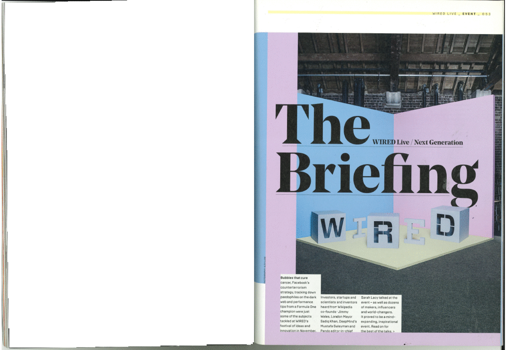
Some great art direction has gone on here; the magazine has run an event and taken
photographs with a clear look ahead to how they'd be presented in the magazine. People were
pictured against a blue and pink background, the colours of which are used in the backgrounds of
the other pages to form a really cohesive standalone section of the magazine.
The designer has played about with columns in an unconventional way, setting type
right up to the edge of white boxes. I'm not totally sure it works, but the idea's interesting.
The two colours they've used seem quite reminiscent of those you'd see in the
'boys' and 'girls' sections of a baby clothes shop - I don't know whether this was some sort of
attempt to make a point about gender equality in the tech industry perhaps? Nevertheless, I
think they work really well, and they're striking within the context of a tech magazine.
Photography
EasyCook magazineChristmas 2021 issue
Pages 42-3
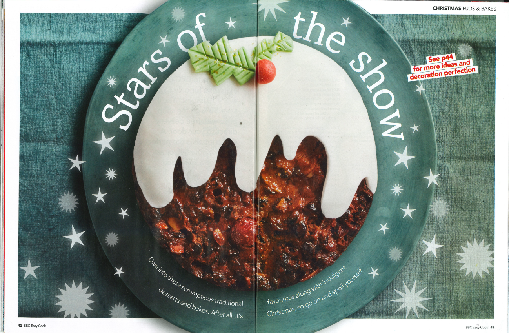
This spread is the first of a section about cakes, which has a circular theme. The magazine is
otherwise quite conventional and boxy, whereas this is a highlight. I like that it uses both
sides of the spread. The theme of the page is carried over directly from the huge image.
The colour is lovely, and all the better for not using a stereotypically
Christmassy colour like
red or green.
The following pages continue the colour scheme and include lots of photos of
cakes, which
naturally continue the circles theme.
I like that the tablecloth stops at the border but the plate is full bleed.
Image Making
UppercaseIssue
20
Pages 38-9
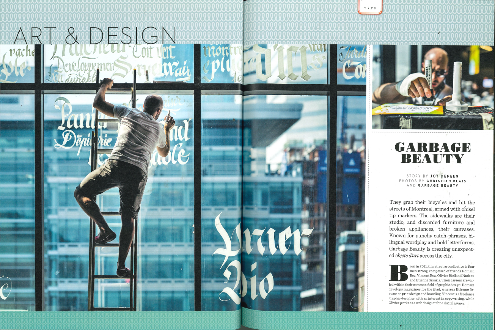
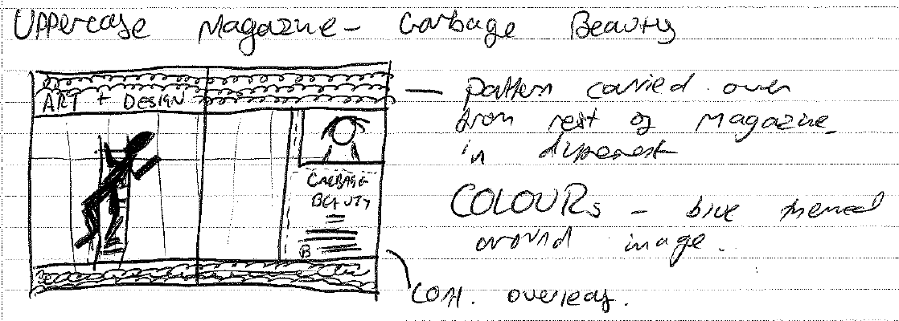
This is an impact spread at the beginning of one of the articles in the magazine,
but it's of a common design repeated throughout the publication. The layout and pattern is
repeated in different colour combinations, to give individuality to each section and topic
whilst retaining visual continuity.
The pattern itself is really nice, echoing embroidery patterns, which reflects the
hand-crafted theme of a lot of the articles.
The magazine's sections are delineated through little tabs at the top of pages, in
a sort of vintage typewriter style, that I'm not sure quite fits with the rest of the page. It's
a style that's a bit overdone perhaps, although I believe this magazine is a few years old now.

The cover of the same issue, carrying through the same pattern
Text as Information
Bloomberg Businessweek4th October 2021 issue
Pages 6-7
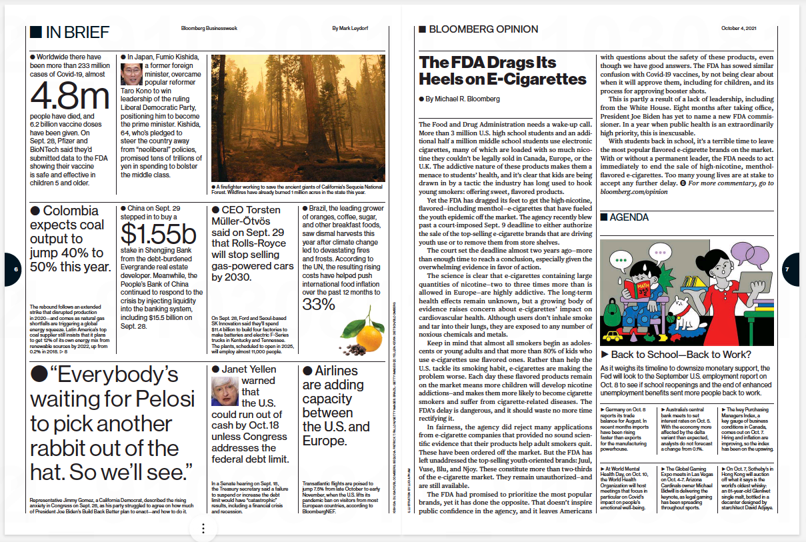
This is one of the first few pages in the magazine, and it sort of serves as a
taster for the rest of the magazine, offering bits of background information about the economy
as well as snippets of other articles featured. It deviates from the rest of the magazine's
simple (newspaper-like) layouts by using different font sizes to draw emphasis to various parts
of the page.
I like the use of bullet points at the beginning of each section. My eyes are
instantly drawn to the biggest dots, and then, in turn, to the sentence following it.
The right hand page features a more conventional article layout, as well as a
little agenda section, which I like. It uses the visual language of a calendar to hint towards
its purpose.
Text as Image
Hiskind magazineJuly 2017
issue
Pages 10-11
It's a brilliantly playful idea for a spread, all about pin badges. The theme
is incorporated really well into the layout including the headline, which is given a gold
outline and a shadow to make it look like a badge itself. I like how the badge images are
scattered all over the page, in much the same way that they'd get attached to a garment.
Furthermore, the body copy is placed at jaunty angles to fit with this theme. The effect is
really well done, it's not too distracting and doesn't hamper readability.
My one suggestion would be to change some of the badge images so there aren't
as many duplicates.
The presentation of the article is really well-suited to the subject matter
and tone of voice of the writing. Brilliant effort.
RESEARCH
Birds & Blooms Magazine
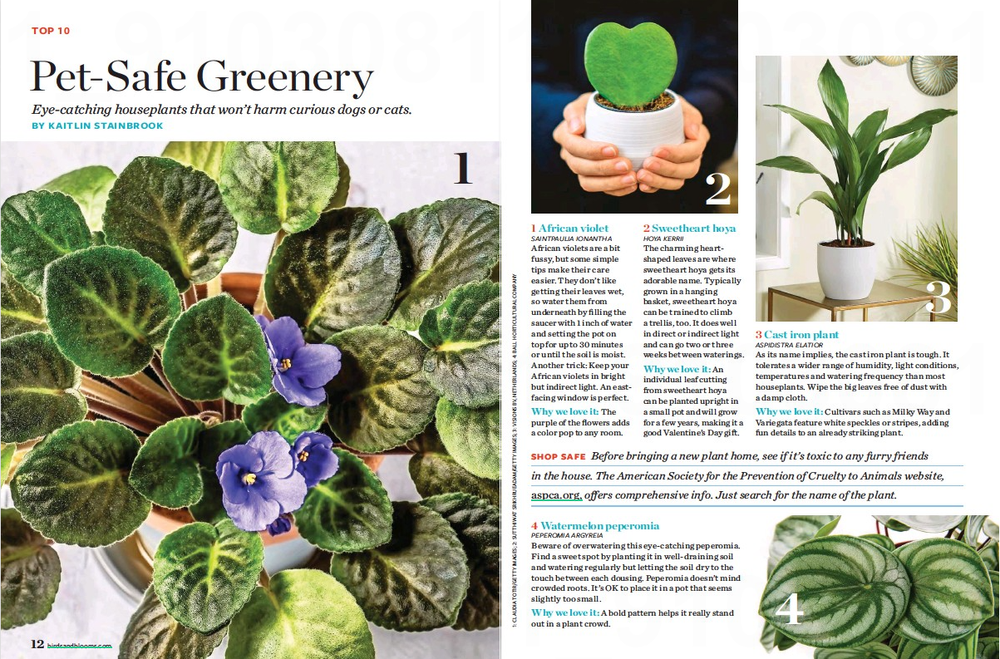
When looking through magazines, I logged on to the website Pressreader, which is free to holders of
a Manchester library card. I saw dozens of magazines on there, a lot of which are of the
mass-market, 'pile as much in as possible' style. Not inherently bad, of course, it's just that a
lot of them can look poorly designed.
I found this to be a pleasant exception. It has a great structure but it isn't too rigid or formal.
A lot of the layout is made out of photographs, which I think look great.
Also I really like the colours. I just wish there was a bit more personality in the headline, rather
than having to conform to the house style and using the same font as every other article in the
magazine.
I also did research into a couple of other magazines, which were impractical to scan due to
their size.
I thought these were well-designed, but not especially nice to read. Huge newspaper style
things they were, I think twice the size of a broadsheet. I liked the bits where the structure had been
played with a bit, with text set at jaunty angles and headlines overlapping it all, but I'll admit it makes
it a little bit harder to read. However I appreciate that there is an important stylistic and contextual
reasoning behing the interventions into the structure; as a metaphor for climate breakdown, I think it works
well.
the wes anderson project
Where to start?
I had no idea where to start. I'd heard of Wes Anderson before, but wouldn't have
been able to name any of his films, and certainly hadn't ever seen one.
So, where to start...
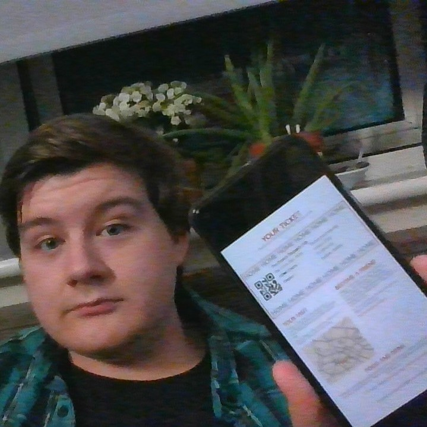I forgot to take the picture in the cinema, so
enjoy this re-enactment, taken in a rather less glamourous location...
I wasn't sure what to expect of The French Dispatch. I enjoyed it.
I was very struck by one of the first scenes, of a butler going up staircases, seen only
through a collection of windows. I liked the wit in the direction of this scene. I'm glad to say that
the rest of the film lived up to these scenes at the beginning.
 Some scenes from The French
Dispatch, ©
Wes Anderson
Some scenes from The French
Dispatch, ©
Wes AndersonI was impressed by Anderson's attention to detail, in particular the symmetry in a lot of
the scenes.
The scenes that most appealed to me were those with an architectural theme, especially one
in the third act with the car chase. It switched between filmed sequences and a cartoon style. I can't
find a screengrab of the particular scene I'm referring to, but this is how it was rendered in the
cartoon version:
 The French Dispatch, ©
Wes Anderson
The French Dispatch, ©
Wes AndersonAll whilst watching the film I was thinking of how I could translate the visual language
of Wes's films on to my spreads. At first I considered adopting some of the bright colours that the
scenes had in places. But then my second idea occured when the scene with the arches came on. I knew I
wanted to replicate it with my designs.
RESEARCH
Sight and Sound magazine spreads
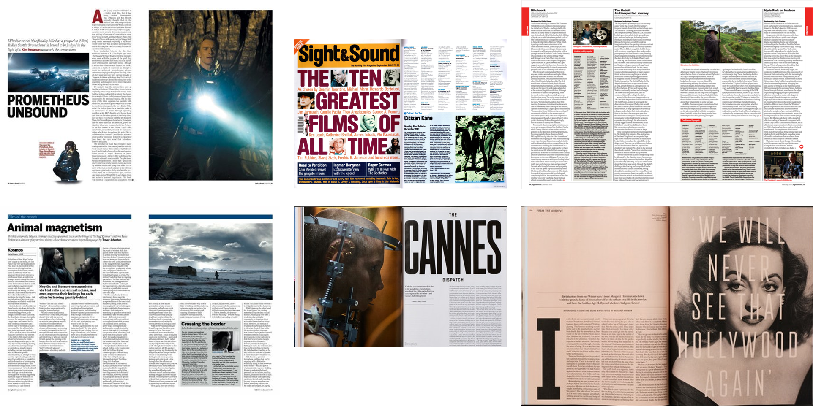
I had a look at Sight and Sound, and the way they design spreads in particular.
My first impression was that there's a lot of whitespace.
However, I noticed by a blogpost on Pentagram's website that they've recently redesigned the
magazine. Each section now uses a different colour of paper. I think this is a great idea - the
white background before is perhaps a result of budget constraints as much as anything, so
anything that can add colour in an unconventional way is interesting to me.
Some ideas
My next steps were to translate this idea into something that could be a magazine spread.
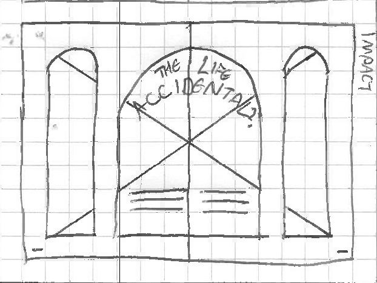
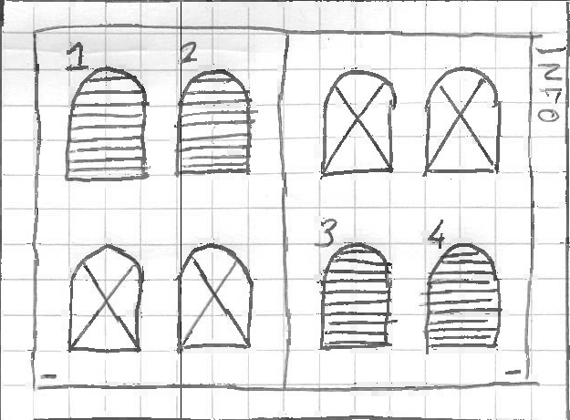
I drew out an iteration of my idea on graph paper. I wanted to use arches almost as
windows, with the page background being a wall to look through as opposed to be a board to stick things
on, if you get what I'm saying.
This version would involve a big image on the impact spread, cropped to fit behind the
three arched windows. I had a few concerns with this layout, however:
- The title would be spread across the gutter, which (although being symmetrical) wouldn't be
ideal.
- I wasn't sure that any of the assets would lend themselves to being split across three windows
of a double page spread like that, especially if I wanted to keep the symmetry going.
- Having different widths of arched windows would mean having different radii of arches - this is
perhaps more clearly a problem on gridded paper than in reality, but still it wouldn't
necessarily look right, or especially Wes Anderson-y.
I put numbers on to the information spread for each of the mini articles, because I thought without them
it would look quite bare. But I don't really think the way they've been placed here looks very good
either.
So I carried on, drawing out different versions of the arch idea.
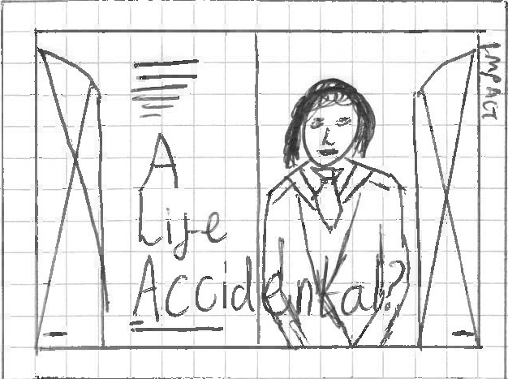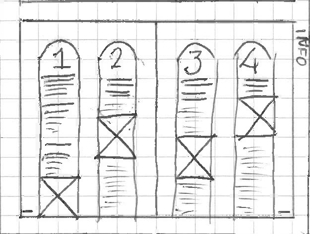
I would just like to take this time to apologise to Mr Anderson for
being so terrible at
drawing faces that none of my depictions look anything like him. And the most unflattering is yet to
come...
Thinking that having so many arches could look a bit overbearing, I instead thought back
to that scene from The French Dispatch, where the arched were at either side and all the action was
happening in the middle. That led me to this idea, of arched image frames being cropped to the extreme
left and right of the spread, with the main imagery and copy in the centre.
Again, I had reservations about having copy running across the gutter. But I thought that
this was perhaps less of a problem on this spread, because the type was left aligned to the only letters
spanning the gutter would be in 'accidental' and not in either of the shorter words.
The information spread focussed more on using the arches less as a window and more as a
doorway, going right to the floor, holding content within them. This was a better idea, I thought,
because there's more flexibility as to what can go in the columns.
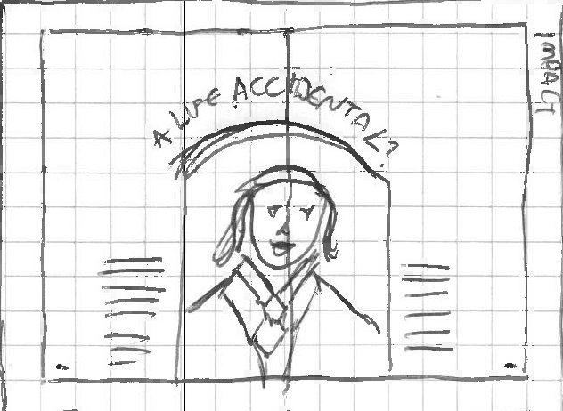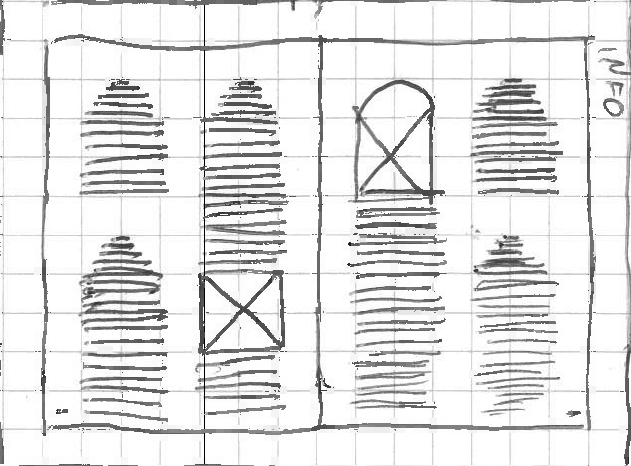
Curved type was definitely something I knew I wanted to explore, as a nod to the sign of
the hotel in The Grand Budapest Hotel.
I explored a few different ways of getting the arches in, whether as frames for columns or
as content themselves.
I want to incorporate symmetry, yes. But there are idiosyncracies to Anderson's direction
as well; some witty positioning so that things aren't exactly right and instead have a tad of visual
interest. In the information spread above, I played about with the positioning of text and images within
the arched frames. Something to think about anyway.
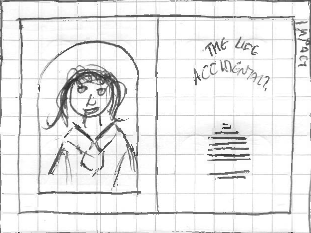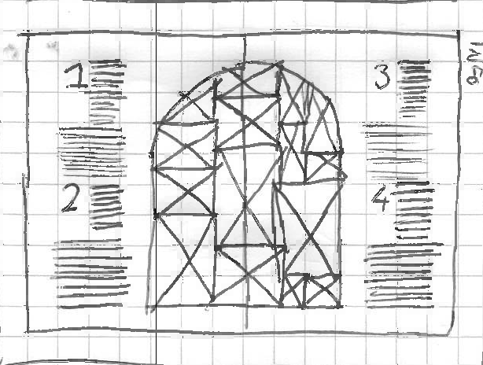
What I wanted to achieve with this iteration was to maintain the arches and symmetry
whilst clearing up a few of the problems re the gutter.
I tried something different with the information spread, consigning the arch design to
just one in the middle, holding a collage of images. Not so sure.
The thing about all these arch designs... I've put them into pairs of spreads based on
when I drew them. But really, any of the impact spreads can go with any of the information spreads, like
so:
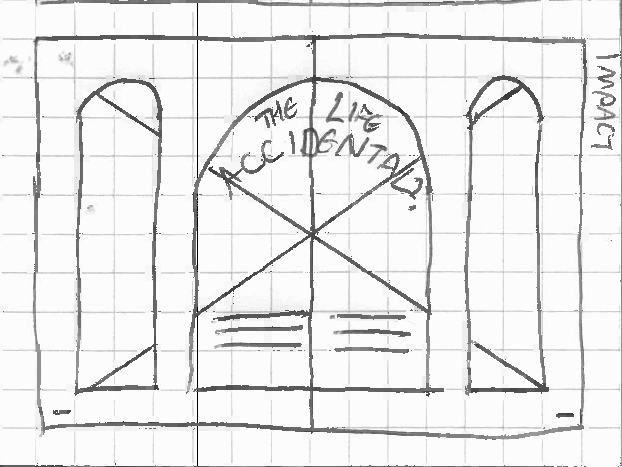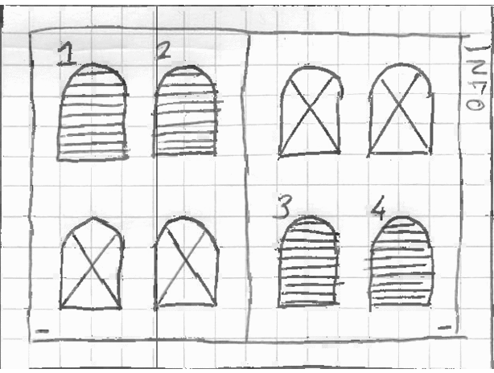
Any combination will do.
It's looking likely I'll go with this idea, but I could go for any of the combinations.
A different idea
I did have another idea for my layouts, however.
When I saw the Grand Budapest Hotel key box poster in the assets folder, I thought it'd
make a nice spread if I manipulated it.
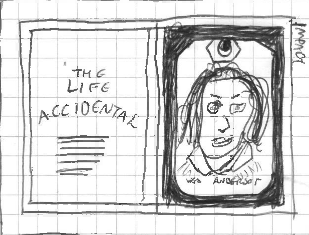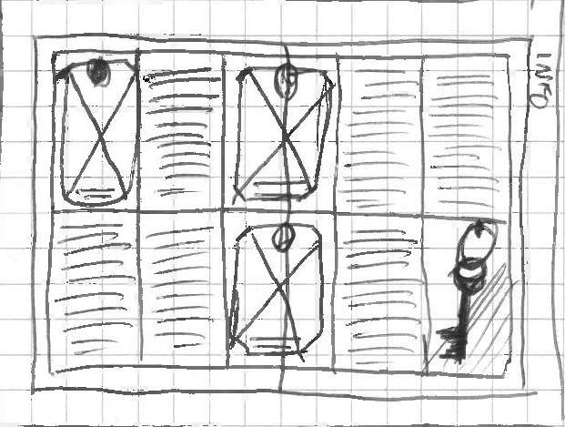
I wasn't lying when I said I can't draw faces. Sorry Wes.
The idea is to use the key boxes and the tags within them as frames for text and images.
I'd use a grid of two rows and five columns on the information spread, and one box on each page on the
impact spread.
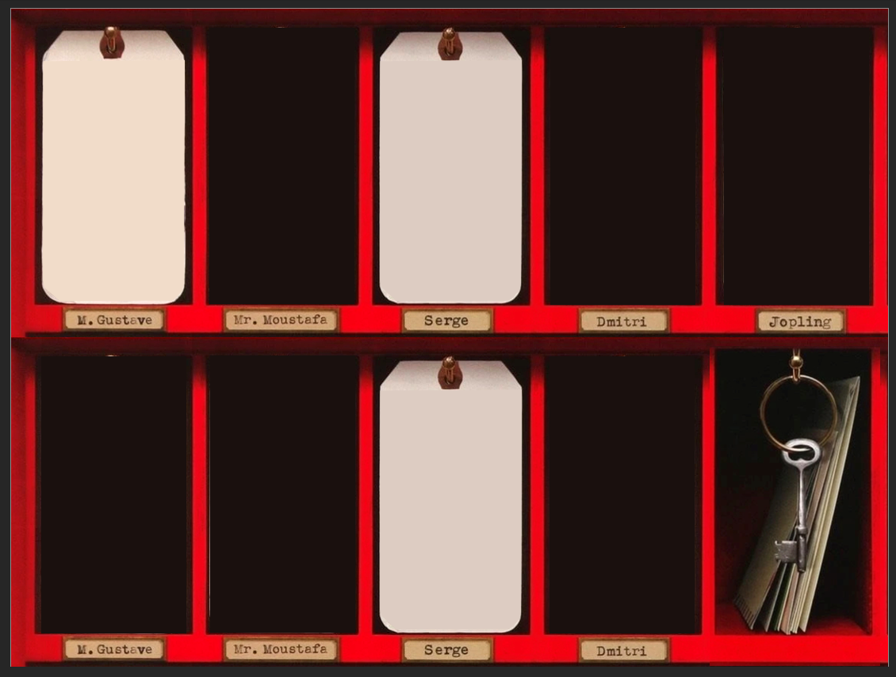
I made a rough mockup of what this would look like.
(in Powerpoint):
I was happy with it. Only 'happy' though. Not ecstatic or anything. I thought it's a bit
unoriginal perhaps. Takes far too much from one asset and not much of my own design. I spoke to Hitch,
who echoed my thoughts about it being an alright idea, but nothing revolutionary. So I think I'll forget
that idea, and focus on the arches.
Getting over my fear of InDesign
John and Fern did a very useful lecture introducing InDesign, which I found helpful. I
played about with grids:
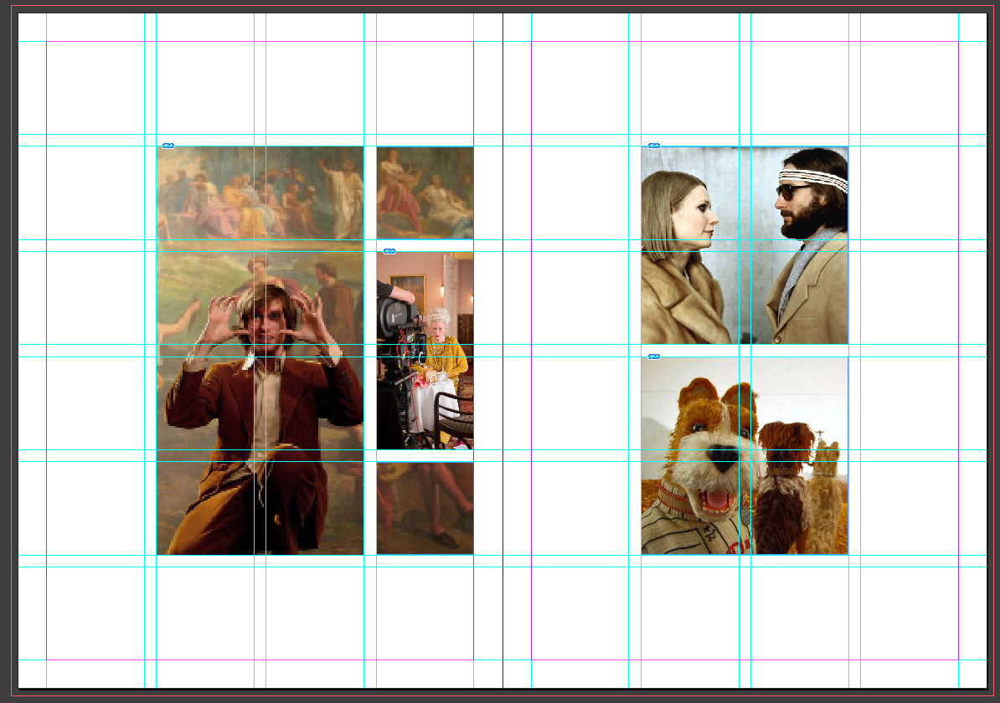
...colour schemes and photographs...
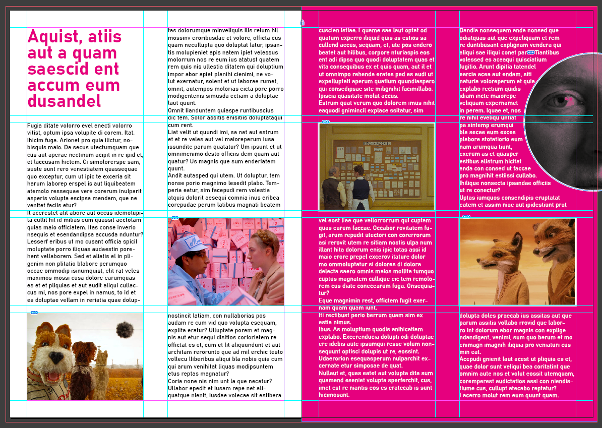
...before starting to create something with an arched design.
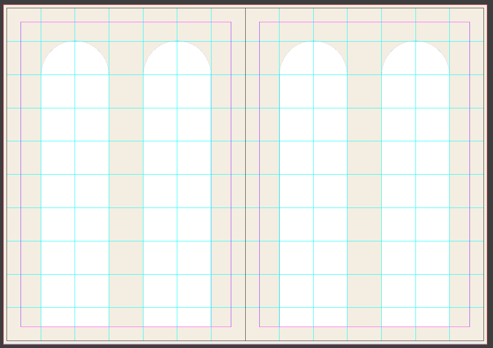
You'll notice that I've tried to put a square grid in on the above spread. Unfortunately,
that's not mathematically possible, such is the aspect ratio of a piece of A4. Therefore the radii of my
arches are one column wide, but that's slightly more than one row high. It was at this point that I felt
the urge to bang my head on the desk. But still, it doesn't really matter I suppose. Although I like
everything to be all mathematical and perfect, a lot of the charm of Anderson's work is the bits that
aren't perfect or polished.
After the session, I didn't want to immediately make the decision of what spreads to make.
I had a play about in InDesign with text and images, seeing how they fit in arches.
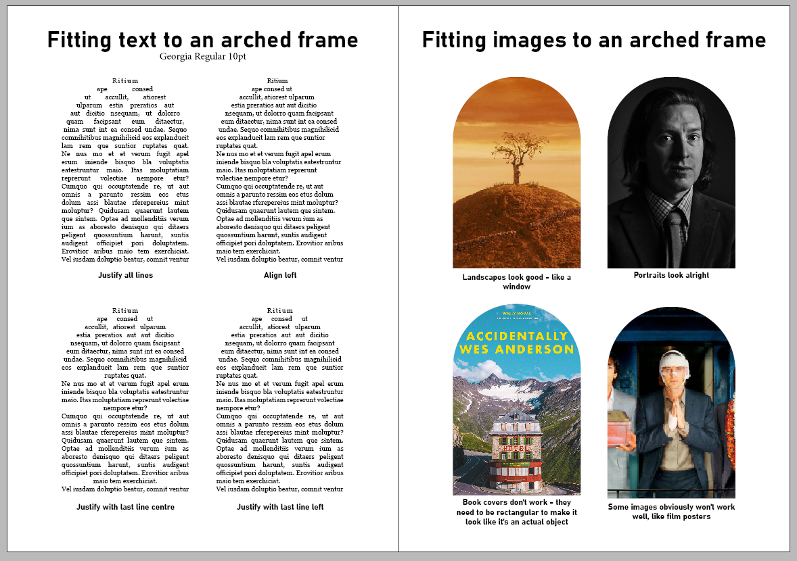
So, in short, the things I learned: justified text looks nice but can end up unsightly and
with rivers all over the place, left align is more readable but you lose the arch effect, images in
arches generally look alright, unless they're a picture that's meant to be landscape, and try to avoid
putting book covers in an arch as it doesn't look like a book then.
I had another go with arches in a grid. This time, ones of different radii.
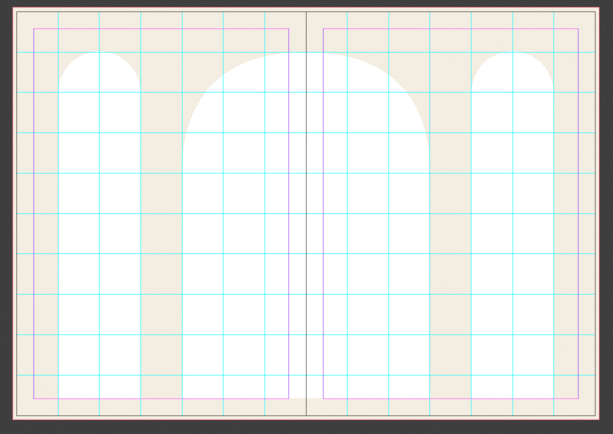
I'm not so sure about mixing differently-sized arches on the page like that (especially
when the grid's shown). It looks from afar like a domed building with towers either side, rather than a
wall with two archways in it. I don't think I'll mix arches like this on my final spreads.
Anyway, I decided it was time I bit the bullet and started to digitize some of my designs.
Actually making a start
I decided to start with the impact spread with the big type and the cut-out portrait of
Wes.
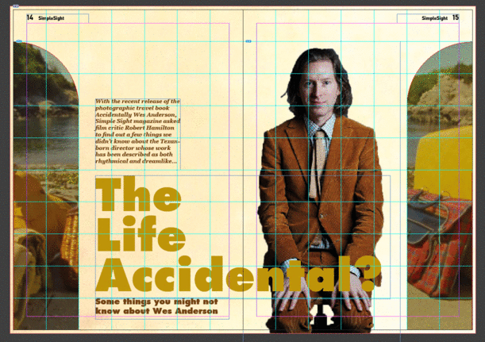
I'm not so sure about the text overlapping the image. Looks a bit busy. I really like the
colours though. And I think the balance is alright, considering it could've been very lopsided.
The image I used for the background... it's not exactly cheating, I hope. Basically I took
a bit of the background from the asset from The Royal Tenenbaums, shifted the hue a bit to be more
yellowish, and suddenly it looks a bit like ivory. It's a bit nicer than just sticking a block colour
there.
I reckoned when I sketched out this one that it'd look nice but be an unusable spread. As
I expected, finding an image to fit in the two narrow slivers of archway is difficult. Also I found
cutting out the picture of Wes Anderson unusually difficult. It's quite a low res image. I think a lot
of the assets seem to be.
Making a wordmark
Not quite sure which design I wanted to go with, but sure it'll be one involving arches. I
want to have a bit of an exploration of arched typography, in particular as a headline to the article.
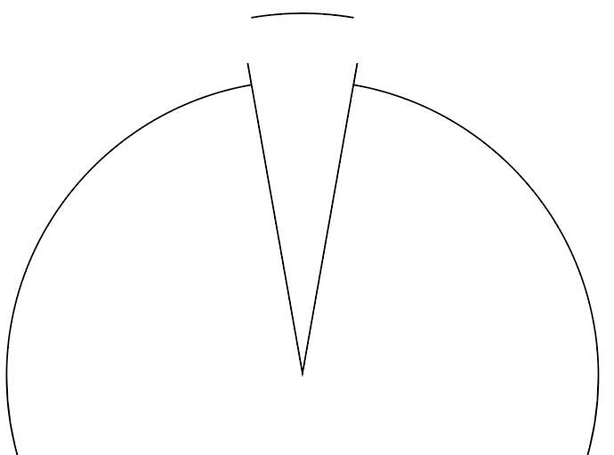
Getting a
curve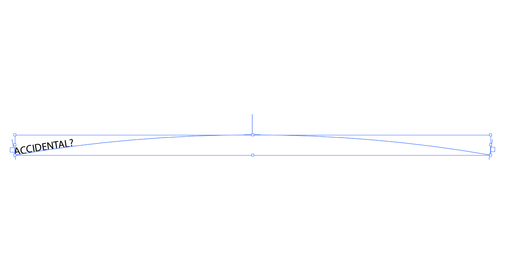
Typing on a
curve Changing the font to
something more interesting
Changing the font to
something more interesting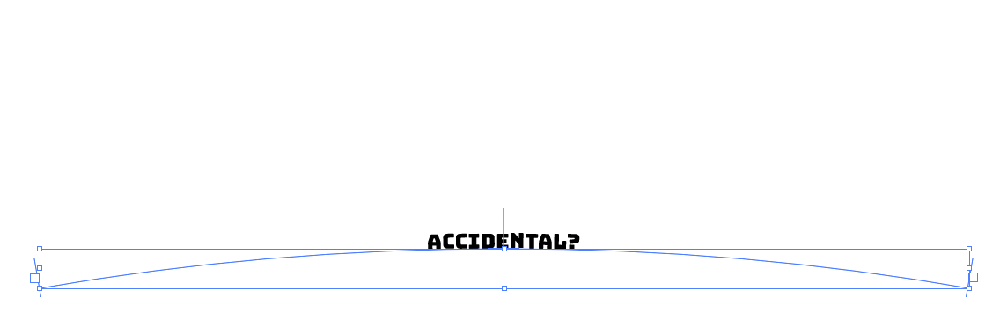
Centralising it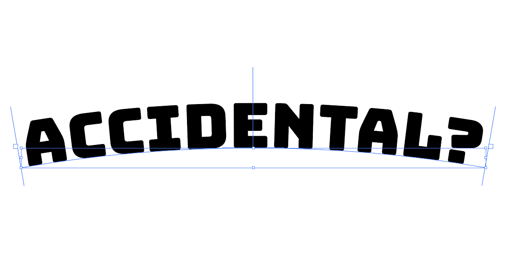
Making the text full size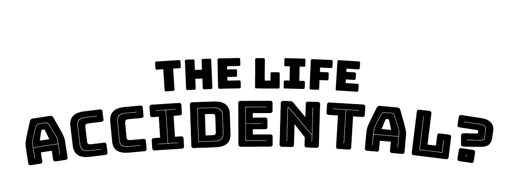
Adding the first two words to the headlineSo I've now got the basic bits of a wordmark. I'm not quite sure why I picked that
typeface, Bungee (from Google Fonts), but I knew that I wanted to use it (having forgotten what it was
called but knowing that Google had a font that was chunky and rounded and angular and had lines running
through it).
I played about with the position of 'THE LIFE'.
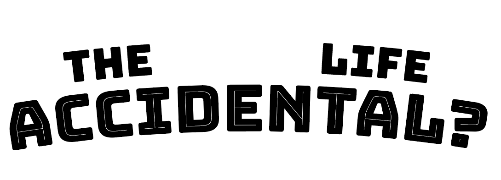
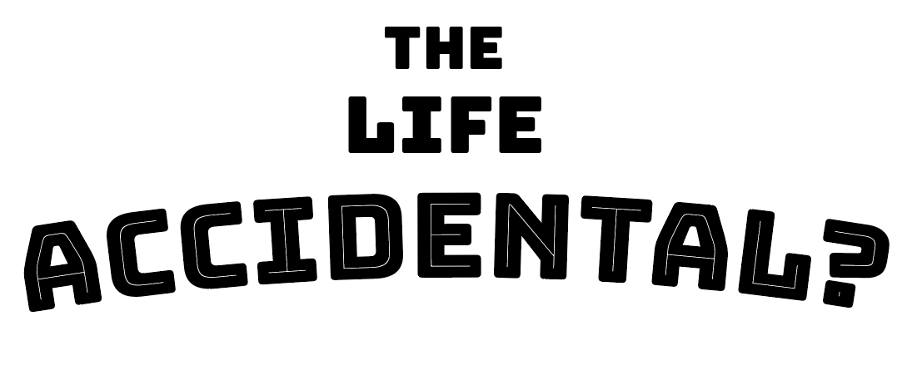
I'm not sure. I'm chronically indecisive, as you can tell.
I've done the same with a few different fonts.
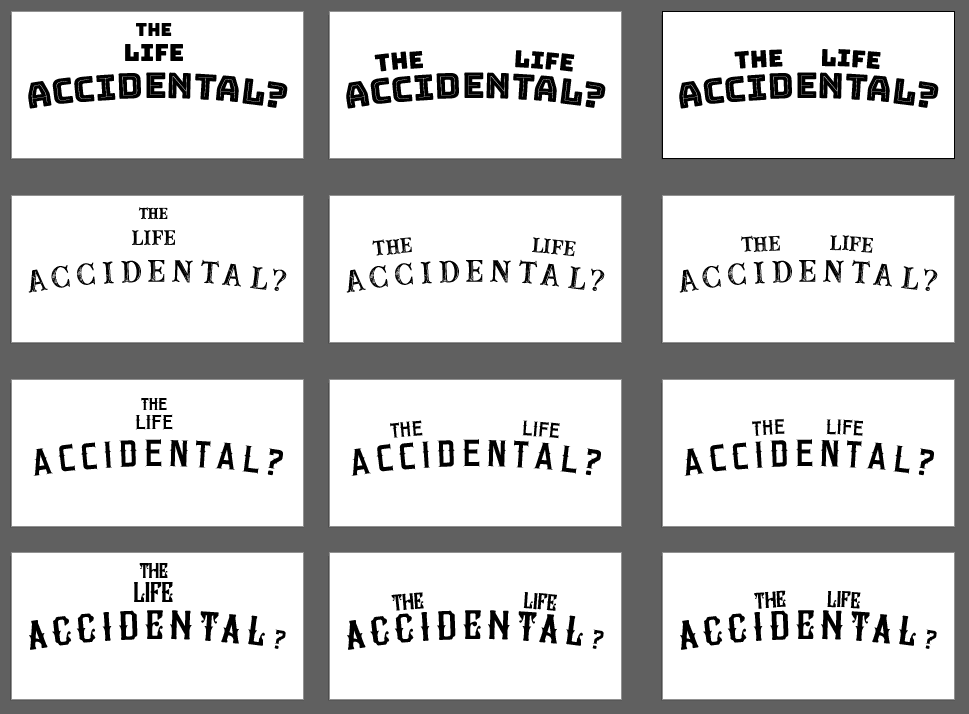
I'm not quite consciously sure what was the decision behind choosing the typefaces I did.
I was obviously inspired by the logos for The French Dispatch and The Grand Budapest Hotel. But I'd not
looked that closely, and chose four fonts which don't exactly resemble them directly. I think the third
option is the best, in terms of being the simplest, most legible font, and perhaps the most
sophisticated. The other three... the first is maybe too childish, the second is too textured, and the
fourth looks more at home saying 'saloon' in a low-budget fairground.
So option 3 it is. The font is called Bonzer San Francisco, from Dafont.
I drew a simple frame behind the text to see how it'd look, trying to replicate the sort
of sign above the hotel.
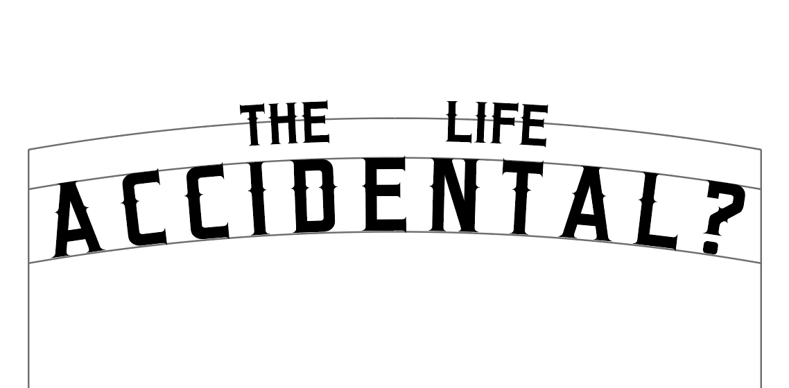
The one thing I'm not dead keen on is the curve. I think it might be better with a smaller
radius.
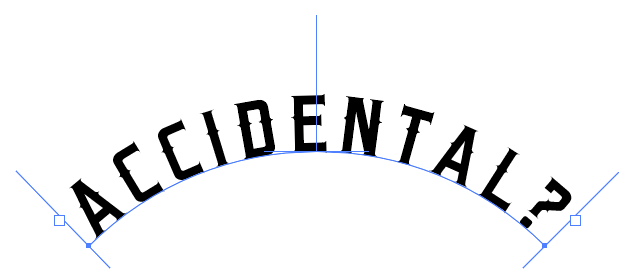
I think that's better. Next I tried to add THE LIFE to that, using a second curve above.
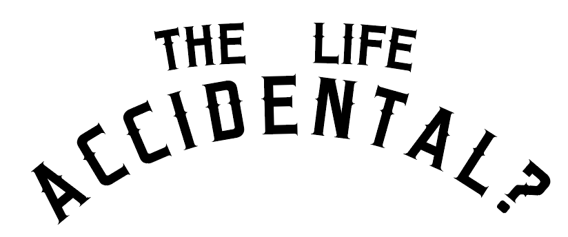
Not so sure. Might have to stick to using properly nested circles if I'm going with
something like this.
I decided to go with the three-level stack idea for the headline wordmark.
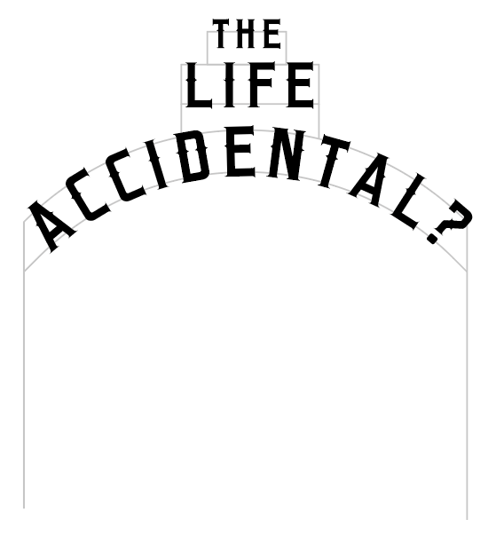
I quite like that. Might have to play about with the colour of the frame so it's less
obvious.
Meanwhile
I was trying out a few iterations of layouts with the wordmarks I'd designed.


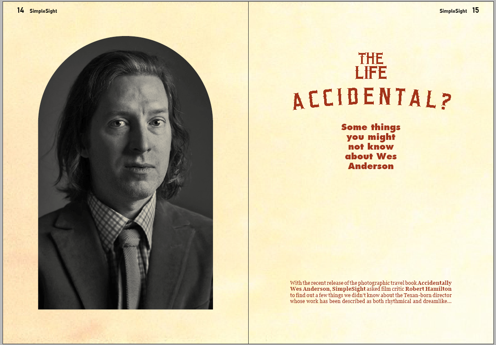
A lot of these weren't really working, balance-wise. That cemented my decision to use a
wordmark on a more curved frame.
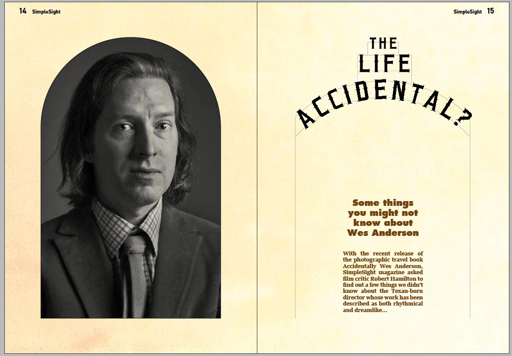
I'd say that's more like it. Needs something else though.
Not that. I tried using a bit of sky from one of the images. Too low res to look
good I think.
That might be too far in the other direction though. A bit sparse.
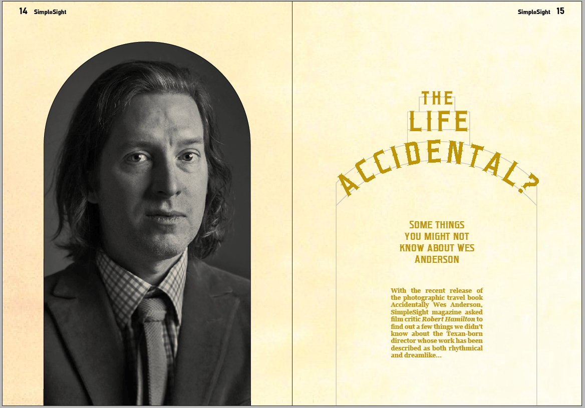
I like the direction I'm going in. The colours are alright. I've decided to extend both
the frame and the portrait down to meet the floor.
I stuck another arch in to frame the copy, and moved the headline frame downwards
slightly. I think it looks more balanced that way.
Final impact spread design
I'm happy with that.
Making the impact spread
So I'm not quite sure which of the sketched designs I'm going to do for the information
spread. But I need to try and maintain some sort of visual continuity with the impact spread.
Therefore I'm going to make a set of subheadings in the style of the headline, using
arched text.
My first attempt involved using the same curve twice, making two rows of type on a path.
Using the same curve twice looks alright here, where the lines are short and so the gap
between the two rows is consistent. But that isn't true where the lines are longer, which results in the
text bunching together.
I made these for all six of the articles to see what it'd be like.
It was clear that I had to go back and redrew them, using proper nested curves this time.
At this time I had to decide which of the mini-articles I'd go for. I made the decision
based on the four that I could condense the titles of down to two short lines: probably not a decision
I'd realistically be able to make myself.
That's better.
Producing an impact spread
I decided to go with the second sketch I did for the information spreads.
This gives me enough flexibility whilst working with a similar style to the impact spread
- using the arch design as a proper archway rather than a window.
This was my first design. It definitely feels like the sort of thing I want to go for.
I think it works better with a background. Makes it a tad more readable and maintains some
visual continuity with the impact spread. It's perhaps a bit less 'designed', and looks a bit more 'mass
market' maybe. But I think I prefer it.
I broke one of the rules I set out earlier here, by cropping the book cover into an arch
shape. Given the article's prefaced by 'with the release of this book' and ends in 'buy the book here',
it seems clear that the book cover image should be shown in all its rectilinear glory.
I've rectified this in the above spread, by making the images take the full width of the
arched columns. Not sure myself.
This is essentially the version of the above but with the images all squared off. I don't
like the top bits though. Feels like I'm abandoning my arch idea too much.
I don't really know which of the three image treatments above make a better layout.
I had a play about with colours, to add a bit more to the design.
I'm mostly happy with it now. I think that it's probably best to keep the photos in
arches, even where it stops the book cover looking like a book. It's a minor issue but I think, on
balance, I prefer the
way it looks.
Final information spread design
Quite happy with that. Some of the images could do with a bit of work I suppose.
Crit
I printed out the two spreads and stuck them up at the crit
I found the crit really useful; I'd been working on the same two spreads for days and really valued
having fresh pairs of eyes on my work. The feedback I received can be summarised as follows:
- "I love how you've used the detail of the hotels to form the layout but I think the images
could've been used differently. Either all B+W or all colour"
- [referring to the portrait of Wes] "Choose an image with more colour to match the background (I
love the title text)"
- "Really love this! You could maybe try some other colour palletes and compare?"
- "Best use of type" x6
- "Best use of image" x2
- "Hired"
- "Like the shape of images and text"
- "I would flip two columns upside down to create balance"
- "Archways ✓ ☺"
- "Best columns"
Some interesting comments.
I decided to explore the suggestion of changing the photo colours as this was an area I
myself thought could do with some improvement.
I'm not so sure. I want the photos to be part of the article; not merely decoration, but
something actually useful for reading and understanding what the spreads are trying to say. I don't
think that's quite achieved by making them all the same colour.
I don't really agree with the person who suggested turning a couple of my arches upside
down. Then it'd sort of lose the whole architectural theme that I've tried to get going on.
I'd sort of chosen my spreads' colour scheme without thinking; I suppose there's no reason
to keep it in those shades.
None of them jump out at me really. I think the colours themselves work pretty well. They
didn't translate well to the printed page; I think much of that was me sticking them to a window and
light shining through.
I tried some different shades of the brown-orange colour I'd chosen.
Fern made a comment that my page numbers were far too large. It's not something I'd really
paid much attention to, but looking at it, yes, they are rather big.
Visit to special collections
John Walsh's lecture
I went to the lecture that John did about his design work. I thought it was very
interesing.
I admired the spirit of a lot of his work, combining physical processes with digital
editing. It's
something I'd definitely like do to more of in my projects.
The Food Project
Picking an idea
The very first idea I had was for pastry. All different kinds of pastry. It'd be an
article about the history of pastry maybe? With like a guide to the different varieties. My idea for
this would be high-res photos of different pastries as backgrounds. I'm drooling at the thought.
It's something to explore.
My next idea for an article is about supermarket meal deals. At the risk of sounding like
a stereotypical Yorkshireman, I like getting good value. You often see a £3 meal deal fridge where one
of the sandwiches on its own costs £2.75. Add a drink and crisps, and that's a fair discount you're
getting. I'd write (or, less likely, find) an article that's a sort of tongue-in-cheek investigation of
the pricing of meal deals, exploring how much food you can get discounted to three quid. Is it a good
idea? Maybe. Not sure.
My third idea stretches the definition of 'food' a tad. It's about the sitcom
dinnerladies, looking at the ways that food is portrayed in comedy. It'd be a serious article, talking
about the programme's humour and analysing a few quotes to talk about the significance of food to
people. I really like this idea. I love dinnerladies; it's one of my favourite shows, because it
combines humour with tragedy, all the time staying warm and grounded. I want the article to have a
similar tone of voice.
I wrote up my three ideas into a pitch sheet.
The dinnerladies idea is my favourite. By a long shot. I'll be writing my own article.
Better get
started.
Spending a week watching telly
All the episodes of dinnerladies have conveniently been put on the iPlayer in the last
couple of weeks,
so I no longer need to rely on a dodgy version on YouTube to do my research.
I say 'research', what that means in practice is sitting through every episode of the
programme.
Whilst watching each episode, I wrote down any quotations or funny lines related to food.
I colour-coded each line according to the character that said it.
This went on and on.
Twenty pages in fact.
I collected 75 quotations on the subject of food. I broke this down a bit into
sub-categories, noting them in the margin. I then gave each quote a number, and made a spreadsheet.
I'm nothing if not thorough.
From here I could see which categories are the most fruitful, and which I should write
about.
My article is going to consist of a short introduction, and then several mini articles
exploring a topic about food in detail, each told through a quote from one of the episodes.
I had said in the pitch that I saw my article fitting into the Radio Times perhaps, or a
newspaper's Sunday supplement. The tone of voice will be serious, but warm and funny, a bit like
dinnerladies is.
The finished article
I've finished writing the article. I've got eight mini-articles. Some of them stronger
than the others. I probably won't make all of them into spreads.
In the studios I've had three or four staff members say to me it's a good and interesting
idea for an article, which has allayed my fears somewhat about it not being directly about food in a
traditional sense.
The difficult bit was thinking of a title. I settled on using the quote "I take all the
labels off me tins then I don't know what I'm having for me tea", a line said by Victoria Wood's
character Bren when the dinnerladies were talking about how they spend their spare time. It's a funny
line, describing a humourous scenario, but it's fundamentally quite sad also, that that's all the
pleasure that some people have in life.
RESEARCH
RadioTimes spreads
I bought this week's RadioTimes to have a look at how the furniture of their magazine works.
Their footer consists of the magazine name on both pages by the gutter...
...and a page number in each bottom corner.
At the tops of the pages, there's a header space which is used for a variety of
things. Sometimes it's blank, sometimes it's got a section name in, and occasionally pointers to
other parts of the magazine.
Starting to make something
You'll notice in the article above the second part of the quote featured in the headline:
"It's brilliant. I'm thinking, what's it gonna be? Fruit salad? Alphabetti Spaghetti?".
So I had an idea. Perhaps not he most original idea in the world, but an idea nonetheless.
I went to the supermarket and bought a tim of alphabetti spaghetti. Two tins, actually, given I wasn't
completely confident in the equal distribution of the alphabet throughout the tins.
(ignore the jelly. that's not
from dinnerladies. that's just my pudding.)
I took that back home, put a bin liner on the floor, and laid out all my crockery.
I seperated out the tomato sauce and the pasta, and went through to find the letters to
spell the words 'alphabetti spaghetti'.
I'd had the idea to do the same with the other part of that quote, fruit salad. I got a
tin of mixed fruits, and thought about cutting them up to look like letters.
I tried slicing a bit of peach to look like a capital F, which I'd then repeat for 'RUIT
SALAD'. It didn't quite work.
Instead I just started to arrange the fruit in the shape of letters.
I think that's better. But I thought perhaps the letters should be made up of different
fruits rather than each being one kind.
Before going to the shop, I went through my notepad of quotes and wrote a shopping list
with anything mentioned by name on there. This included minestrone, croissants, chickpeas, and
artificial sweeteners.
It's obviously impractical to try and replicate my fruit salad idea with a tin of
minestrone. So my idea for that was to put it in a bowl and add a bread question mark, which will act as
the punctuation in the quote featuring minestrone.
I thought that was a bit too big, so I took the scissors to another slice of bread and cut
out some smaller punctuation (now there's a sentence I never thought I'd write).
I was a bit unsure how to incorporate croissants into text, but decided the best way was
to collect the crumbs and then arrange them into the shapes of letters.
I've spelled out the words 'croissant' and 'crumbs' to fit in a quotation that uses the
two words. My idea is that the spreads will include a quote on the left hand page, featuring food-based
typography that I'm making now.
The final piece of food typography I made used a tea tray and a dispenser full of
artificial sweeteners.
Time to start sketching out ideas.
Making designs
I started off by getting down one of the articles I definitely knew I wanted to do.
Note that in this instance, rather than trying to make any sort of typography out of
'breakfast in bed', I decided to include photos of the food instead, but play about with the positioning
to give it a bit of interest. I don't want every page to be too repetitive... "oh, here's the word
croissant written out in croissant crumbs, oh, here's the word breakfast written in sausages".
This is the rough sort of layout I want to have over all my information spreads to give it
a bit of consistency: quote on the left page with interesting typographic effects, 'food is ___'
subheading on the right hand page, along with a photo of the scene being quoted and the relevant couple
of paragraphs of my article.
I did the rest, too.
First spread
This was my first attempt at taking my spread from my brain to the computer. I had a bit
of a play about with the right hand page, looking to see how I could incorporate the photo in a nice
way.
Typographically, I wanted to use the typeface Shrikhand (Google Fonts) for display text,
as I think it has a nice nostalgic feel right for the sort of tone of voice I'm going for. It's quite
similar to the font Cooper, but a bit less overused.
I realised at this point that the screenshots I would take wouldn't exactly be in high-def
quality, such is the pitfalls of using a twenty year-old programme as source material. However, I think
that readers would accept that. I tried uploading the screengrab to some online tool that promised to
use AI to apparently upscale the image, it wasn't fruitful.
I made a version with a bigger photo and the text arranged differently, but I don't think
it looked very good.
I then did what I consider to be a more elegant treatment of the text, wrapping it around
the image.
The right hand side looks awfully bare. And whilst I understand, whitespace is important
and all that; I'm designing for a mass market publication here, I think a totally blank space would
look far more at home in COS magazine for example than in the Radio Times.
So I went back to the notepad with an idea. It was one that I'd had for a while, wanting
to incorporate the dinnerladies' apron fabric pattern into the design.
I think this has the potential to bring some proper visual continuity to my spreads,
uniting them as part of one article.
I'm not totally sure this works.
Image Trace has sorted that out. I couldn't quite decide which of the results to use,
whether to keep it just to a handful of colours or to make it more photorealistic. In the end I went
with 8 colours.
I like this. I think having the apron motif running through every page will be nice. My
one concern is that the pattern and the photos of the staff in aprons might clash a bit. But they're at
different scales so it shouldn't matter too much.
My attention then turned to starting to assemble the quote page of this spread.
I wanted to put a picture of a cooked breakfast in the middle, which I eventually found
one of. I arranged it to fit and this is what I came up with:
At this point I spoke to a member of staff who said she'd seen the spread over my shoulder
and thought it looked interesting. However she did say that she didn't read the page in the anticipated
order. Her eyes were first drawn to 'Mum!' and then to 'Care...'. Not ideal. I need to have a play about
with hierarchy to try and reduce the prominence of parts of the quotes, whilst keeping a bit of
distinction between speakers within quotes.
I think this is better. The issue now is that the picture I've used isn't exactly the sort
I'd imagine the characters in dinnerladies making. Unfortunately, the stock photos that exist have a
tendency to be more like a posh restaurant's food than a canteen's. I looked on Wikimedia Commons,
figuring somebody must've gone to a greasy spoon and uploaded something.
That's a bit more like it I suppose, but it looks rather unappetising. Perhaps it's the
blue plate.
So I looked back at that initial sketch, and decided to use seperate elements for the
items of food in the cooked breakfast. I sourced assets from stock image sites all over the place,
trying to assemble something resembling a cooked breakfast.
That's better. That's my final design for this spread.
Second spread
I decided to try and make a second spread, using the first as a sort of template. I chose
to do the Food is political mini-article, with the quote mentioning the class connotations of wholemeal
pitta breads.
Oddly enough, at this time I was sat in the studio next to Noura, who had just got out a
wholemeal pitta. I was very kindly allowed to photograph it to use in this article. Thank you for saving
me a trip to Asda.
I edited it a bit to make it look like it'd been folded.
I then arranged them into a staggered pattern and added text.
I'm not so happy with the text wrapping on this one. Feels a bit too tight and unwieldy.
I've emboldened the first line of the quote, which I think makes it a lot better.
Third spread
For the next spread I'm doing the International one, with the croissant crumbs.
It's not quite working for me, this one. Perhaps it's the colouring. I'd tried, on all my
spreads, to use only colours picked from the apron pattern on the right hand page. But for this spread I
deviated a bit, taking the colour of a croissant crumb and using that as the colour for the quote text.
Changing the colours round a bit makes it slightly better. But I don't really think the
drab grey is very nice as a background.
So I decided to go back to beige, but with bolder orange text this time. It's not
explicitly croissant-coloured, but I suppose the croissant colour is like a midpoint between the text
and background tones.
Fourth spread
My fourth spread is the Educational one, with the minestrone, making the point about the
futility of life in the factory. I wanted to incorporate the pictures I'd taken of the soup.
I started by assembling the words of the quote on the paper. Then I added the soup bowl.
There's something missing. I was a bit hesitant to use the
minestrone-with-a-bread-question-mark image, I thought it was a bit corny maybe. But it just looks bare
as it is.
There's no real focal point to this. So I stuck the big bowl back in, and changed the
background colour to make it more minestrone-y.
That's better. Still not 100% happy with it. I'm not sure about the red text on orange of
the final line of the quote, and I'm also not convinced by the multiple sizes of soup bowls.
Fifth spread
The last mini-article I'm going to make a spread for is the one about dieting, as I wrote
it as a sort of conclusion for the article.
I took away the tea tray background from the sweeteners and then added the letters, making
the quote around it. I think it looks quite sparse, but then again that's probably just my tendency to
want to fill every space with something.
The screenshots are poor, I'll admit. It's a composite of two different shots within a
scene, but Bren's in the back of her shot and Dolly's at the front of hers. So in trying to make them
the same size I've enlarged Victoria Wood and she's gone rather pixellated unfortunately.
I've cropped Dolly's right arm off to give it consistency with all the other pages, and
I've taken a photo of the cannister that the sweeteners come in to add *something* to the quote page.
Finally I've made the cannister gold rather than green, to make it fit in more with
the sheet.
Impact spread
My initial idea for the impact spread was to use tin cans.
Sue suggested I split the quote in the title up into two, which I think is a good idea.
I started to do the layouts on InDesign; I find making iterations digitally far easier
than sketching, it helps me get my ideas down quicker, helped by the presence of a 'duplicate' button as
well as 'undo'.
This was my first version. The tins were photographed by me, and previously held fruit
cocktall, alphabetti spaghetti, and minestrone. I found it quite difficult to take a good photo to be
honest. I either got my reflection in, or couldn't get the angles right.
So I tried doing away with the tins altogether, and sticking a portrait of Victoria Wood
on there. I considered adding a photo of the whole cast, but the article is more of a tribute to Vic's
writing about food than to the performances, great though they are. So it felt right to just have a
picture of her on there, in her apron.
I'm not sure about that image though. Her pose is a bit odd.
That's a nicer picture. But I don't think the spread is very balanced, and I don't like
the text being up at the top.
I had another go at doing one with the tins. All on one page this time, with the quote on
the other page. This echos the layout of the information spreads.
I still wasn't feeling it though. Perhaps changing the colour would make a difference, I
thought.
I accepted that my tin can photos aren't very good, and used a stock image instead.
I thought it looked a bit boring really, so I experimented with putting the picture of
Victoria back in.
Then I got carried away.
I tried replacing the middle tins with the apron pattern for a bit of continuity with the
other spreads.
I then copied the column of apron pattern from the information spreads into this one. I
quite like this one:
Then I decided again to ditch the tins and just let the pattern do the talking.
I considered, for a few seconds, putting the text on tin cans.
But quickly abandoned that idea.
I went back to putting a picture of Victoria Wood on there.
The apron + apron pattern might be a bit much.
I've added an outline to the portrait which makes it a bit more seperate.
Finally, I've put the colours back to the brown and red combo. It feels warmer and more
fitting to me.
BONUS EXTRA SPREAD!
Well, it seemed a wrong to have collected all those quotes just for them to go to waste.
So I collected a few of the best and put an extra spread together of them.
I know it's far from perfect. It was put together in twendy minutes.
I felt that maybe the text colours could alternate a bit to help with telling the quotes
apart a bit.
RESEARCH
Comedy Carpet
by Gordon Young
Young is a typographical artist from the UK.
When making my quotes spread, I realised that I was sort of being unconsciously influenced by
this piece of artwork, which I've seen many a time on trips to Blackpool. Situated on the prom
at the base of the Tower, it consists of jokes, one-liners, and catchphrases from British
comedy, written on floor tiles. It is 2200 square metres in size, and contains 160,000 letters.
It was installed in 2011 as part of the regeneration of Blackpool's seafront.
My family and I go to Blackpool every year. I really like the place; it's down-to-earth, not
pretentious, but still manages to retain the magic that I loved it for as a child. These sorts
of feelings - of warmth and homeliness - are echoed in the choice of comedy catchphrases on the
artwork. Blackpool's perhaps better known for ballroom dancing than standup comedy, but it is
comedy that, to me, has a greater appeal and is most similar to how I perceive the town: homely,
warm, and nostalgic.
I really like the artwork. This quotes page that I've made is (in a way) a sort of allusion to
it - both with similar aims, of raising a laugh through quoting funny and relatable humour. I
really like the typography that Young chose; a range of fonts, all in red, black, and blue. It's
of its time I suppose, I seem to remember a lot of organisations adopted nostalgic branding
around that time (for example the resurgence of Keep Calm and Carry On, and the patriotic summer
of 2012 with the Jubilee and the Olympics). But I really like it, I think it's really good at
what it sets out to do.
Crit
I printed out my seven spreads and stuck them up on the window.
The feedback I got was as follows:
- "Best use of colour"
- "Best use of type" x2
- "Hired!" x3
- "Dynamic type and image, really new and fun"
- "Really love the theme of these spreads, reminds me of childhood. Maybe just change the quotes
page"
- "Best use of image" x2
- "Really interesting pattern"
- "Could try a more contrasting colour pallette"
- "Really like the pitta spread ☺"
- "A lot going on."
- "Imagery"
- "Love the use of colours + you have potential"
- "Hired. great effect"
- "Great work but not so sure about printout for quotes"
- "Funniest" x5
Some really helpful feedback there. I expected that the quotes spread would be the one that people
weren't so keen on, I'll admit it is quite difficult to read and not especially nice to look at either.
This probably wasn't helped by me sticking the pages up on the window, with the light shining through, a
lot of the text was illegible. If I had more time I'd make a few new versions with the feedback taken on
board, but unfortunately there isn't much time before submitting.
Evaluation
I've really enjoyed this project. I wasn't sure I would so much to be honest. I didn't
really consider myself to be that much of a magazine fan before. I used to get a computer magazine every
fortnight. And I occasionally pick up Private Eye. But other than that I'm not exactly embedded in the
whole culture around publishing or anything like that.
Of the two projects, I enjoyed both, but preferred the second one especially. I liked
having the freedom to take the project my own way. However, that's not to say I didn't like the Wes
Anderson project; I went from not really knowing who he was to being something of a fan within about a
fortnight. And the food project; I made something perhaps unexpected and unconventional, but I think it
captures the brief well by exploring what food can mean to people.
The research for this project essentially involved immersing myself in the two worlds of
Wes Anderson and Victoria Wood quite quickly. For the first project, I think going to see The French
Dispatch was really useful. I wasn't sure whether to go, if I'd find it a bit boring or whatever. But
I'm glad I went because it was the scenes in that film that inspired the direction I took my designs in.
For the food project, I spent hours watching every episode of dinnerladies and noting down jokes and
quotes about food, which was useful. But I suppose my trip around the supermarket was research in a way;
in the search for items mentioned in the show, I discovered a lot more about food - products that I
didn't know existed, and new stories behind items we see every day.
I think that my idea generation hasn't been especially good in these projects; generally,
I had an idea really early on and wanted to go with that (and usually did go with that). For example in
the Wes Anderson project, a lot of my sketches were united around one theme, and the ones that weren't I
quickly discarded. I definitely need to improve here.
I worry that in the food project I might have fallen into the old trap of quantity over
quality again. I presented five very similar spreads at the crit; I wrote my own article (with far more
words than was called for), and wanted to design spreads for everything, no matter how many times the
tutors tried to suggest that I "just focus on one or two for the time being". I can't help myself!
I'd say I'm reasonably happy with my designs for the spreads. I'm not quite sure they're
as polished as would be expected of professional work (especially the Wes Anderson project).
If I was doing the project again, would I do it the same? I don't think so, no. I'd probably
have spent more time in the Wes Anderson project watching a few more of his films, so that I had more
references than just The French Dispatch. I might have been able to come up with more ideas that way. And
would I have chosen to do the dinnerladies article rather than something more directly food-based? I'm not
so sure.
I'm glad the project's over - not because it's especially stressful or boring or anything -
but just because I want to move on to something else. With a break first of course.